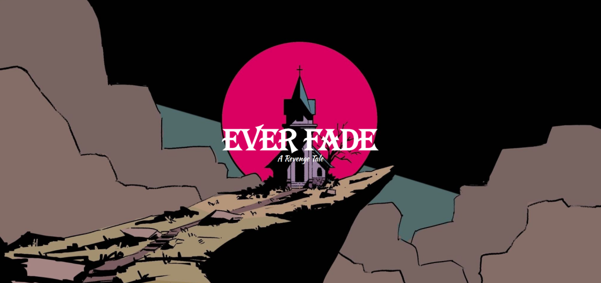
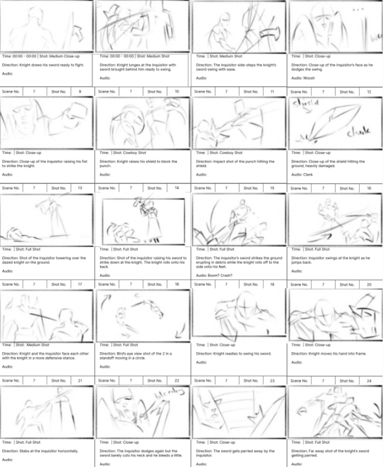
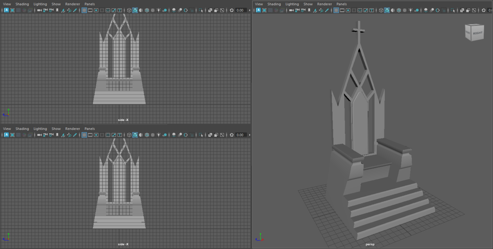
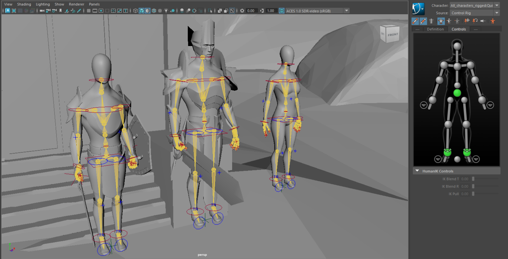
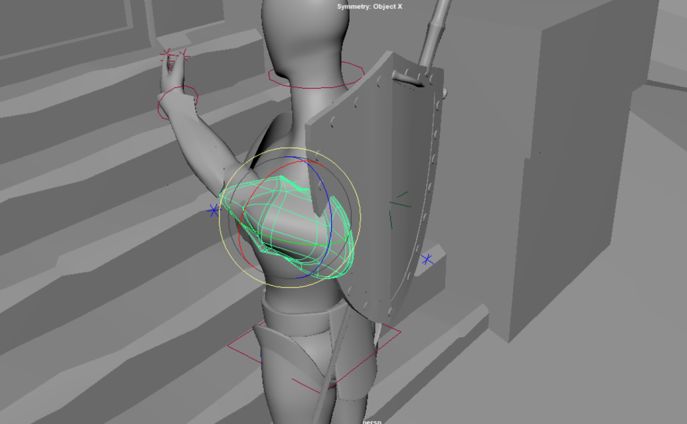

A 4.5 minute animation about a knight who travels to a church to avenge his murdered wife. I worked on storyboarding, 3D modeling, UV mapping, rigging, animating and rendering.
- Team: 5 people
- Tool: Maya
- Runtime: about 4.5 minutes
1. Storyboarding
I drew each scene so it could be explained in one sentence, and made sure the frames flowed into each other like comic panels.

2. 3D modeling and UV mapping
I modeled the throne and church benches, then did about 80% of the UV mapping, slicing each model into flat pieces my teammates could draw textures over.

3. Rigging
I rigged all three characters by building a poseable skeleton inside each one, so the skin bends the way a body would.

4. Animating and rendering
Each member animated a different scene in the school lab. Rendering took about 40 minutes for every 5 seconds, so we borrowed up to 7 computers at once.

What I would change
We ran short on time, so we cut some story scenes and the pacing feels a little rushed.